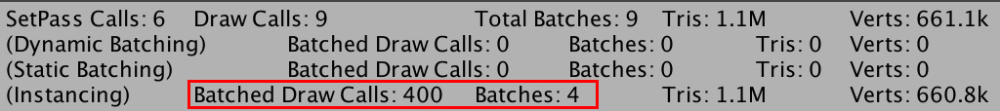
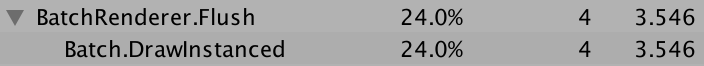
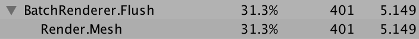
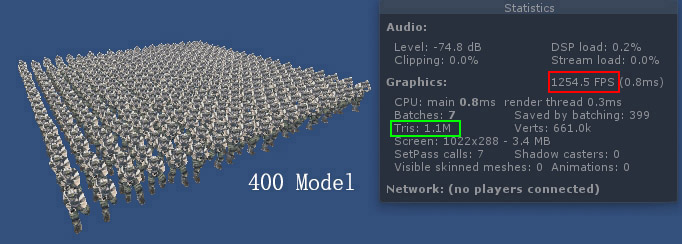
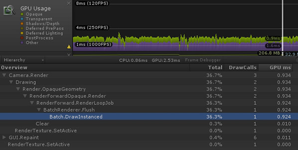
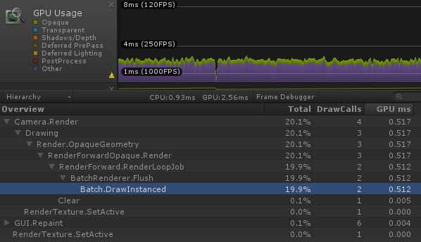
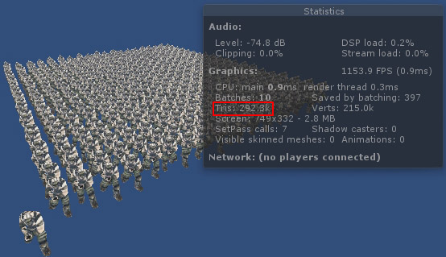

GPUSkinning 3
2017-3-6
继续对 GPUSkinning 进行改进。这次增加了两个 feature，增加了 GPU Instancing，以及 Procedural Drawing

在使用了 GPU Instancing 后，绘制 400 个角色模型只用 4 个 Batches，而原来每绘制一个角色模型都会产生 1 个 Batch 的开销。

GPU 开销从 5.149 毫秒降低到了 3.546 毫秒。
增加了 Procedural Drawing 后，可以看到 fps 增加了，可以绘制更多的角色模型了。

多绘制了一倍的角色模型，fps 反而增加很多，这说明 Procedural Drawing 更充分的利用了 GPU 的能力。图中 Unity 的 Statistics 窗口中无法统计到 Procedural 绘制的三角面。

对于 Procedural Drawing 还有一个问题有待解决，目前每个角色的坐标、旋转都是存储在 ComputeBuffer 中，当角色坐标、旋转发生改变的话就必须刷新 ComputeBuffer，这个操作的开销是非常大的。
补充：新增 feature，通过 CullingGroup 增加 LOD 功能。远处的角色使用减面后的模型进行渲染。

开启 LOD 后，GPU 开销从 0.924 毫秒降低到了 0.512 毫秒。

开启 LOD 后，在保证渲染效果的前提下，使用了更少的三角面，从原来的 100万 降低到了 29万。
以上测试为开启 GPU Instancing，并且仅有一层 LOD 时的效果。根据项目需要，可自己定制多层 LOD。